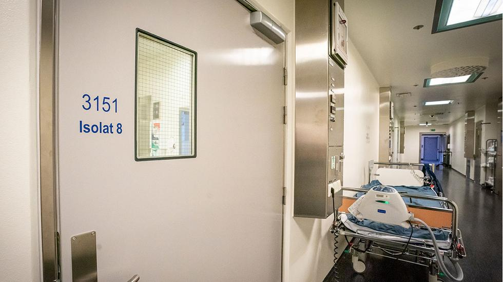
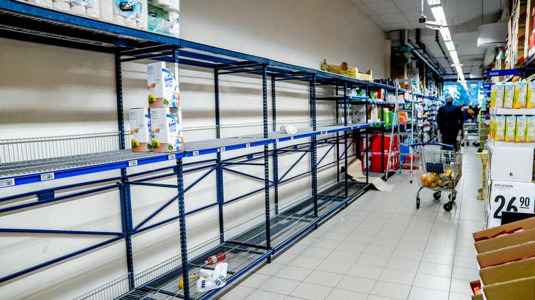
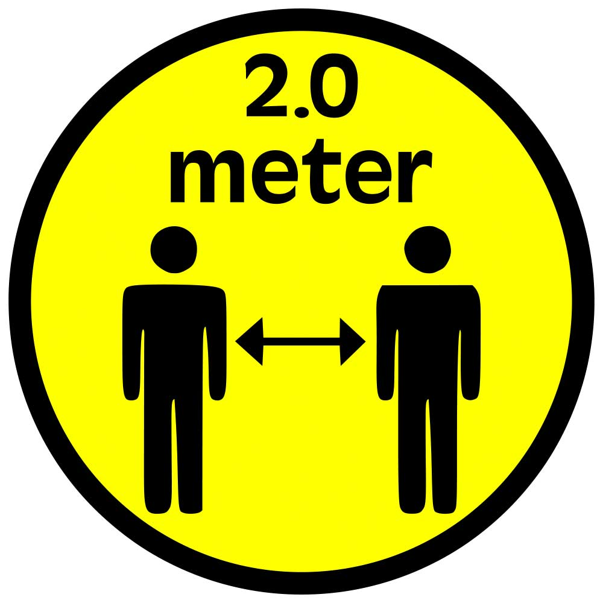

-
1. desember 2019
Pasient null får feber
En eldre mann i millionbyen Wuhan i Kina blir syk. Han har symptomer på lungebetennelse, men det han er smittet med, er mye verre. I kroppen hans finnes et virus som få måneder senere har kastet verden ut i en helsekrise av episke dimensjoner.
En artikkel i det medisinske tidsskriftet The Lancet peker et par måneder senere ut mannen som «pasient null»; den første pasienten som beviselig er smittet med Severe acute respiratory syndrome coronavirus 2 – SARS-CoV-2 eller bare koronavirus. Senere har det vist seg at viruset kanskje kan spores lenger tilbake – og til andre steder. -
30. desember 2019
Smitten sprer seg i Wuhan
Sykehusmyndighetene i Wuhan sender ut et notat om en mulig spredning av en lungebetennelse forårsaket av et ukjent virus. De ber sykehusene i området om å rapportere om pasienter med bestemte symptomer, og dagen etter viser oversikten at 27 nå er smittet. Flere av dem arbeider ved fiskemarkedet Hunan, der det i tillegg til fisk også selges spesialiteter som for eksempel beltedyr, flaggermus og hulepinnsvin.
På årets siste dag advarer lokale sykehus på det sosiale mediet Weibo om at et virus er i omløp, men beroliger med at en ekspertgruppe er sendt til byen for å få bukt med sykdommen. Utenlandske nyhetsmedier plukker opp historien, og de første sakene om en ny smittsom sykdom i Kina dukker opp. -
9. januar 2020
Sykdommens første offer
En eldre mann som har handlet på fiskemarkedet i Huanan, er den første som dør med koronavirus. Fire dager senere bekrefter myndighetene i Thailand at smitten har spredt seg fra Kina: En 61 år gammel kinesisk kvinne blir syk under et opphold i Bangkok. Hun har også handlet på markedet, og Verdens helseorganisasjon oppfordrer Kina til å raskest mulig finne kilden til det nye viruset. Det er fortsatt uvisst om den kan smitte fra menneske til menneske.
-
26. februar 2020
Første smittede nordmann
 Koronaviruset blir påvist i Norge for første gang hos en kvinne bosatt i Tromsø-området som hadde oppholdt seg i Wuhan-regionen i Kina.
-
6. mars 2020
Fullmakt til helsedirektoratet
Helsedirektoratet får fullmakt til å iverksette tiltak for å hindre smittespredning og sikre helsehjelp.
-
8. mars 2020
Smittet på skiferie
De fleste smittetilfeller i Norge kommer fra nordmenn som har vært på skiferie i Østerrike og ferie i Nord-Italia. Av 169 registrert med koronasmitte, er minst 109 smittet i disse landene.
-
9. mars 2020
FHI legger fram scenario
Folkehelseinstituttet (FHI) legger fram et nytt scenario og anslår at 22.000 koronapasienter vil trenge sykehusbehandling i løpet av året.
-
10. mars 2020
Smittespredning i Norge
Første tilfeller av koronasmitte i Norge som ikke kan spores til utlandet
-
12. mars 2020
Norge stenger ned
- Regjeringen varsler de mest inngripende tiltakene i fredstid: Alle skoler, barnehager, universiteter og høyskoler blir stengt. Frisører, hudpleiere, treningssentre, svømmehaller o.l. må lukke dørene. Alle fritidsreiser frarådes.
- Det første covid-19-dødsfallet i Norge.
- Børsfall på 8,8 prosent på Oslo Børs. Krakk på over 10 prosent på en rekke børser i Europa, USA og Asia.
- Arrangementer med mer enn 50 deltakere blir forbudt i Oslo.
- FHI anslår at koronaepidemien trolig vil nå en topp i Norge mellom mai og oktober.
-
12.-13. mars 2020
Nordmenn hamstrer
 Hamstring tar til i butikkene i Norge. Det samme skjer i en rekke andre land. Særlig hamstres det dopapir.
-
12. mars 2020
Pandemi
- WHO erklærer utbruddet som en pandemi
- FHI melder at de ikke lenger har kontroll på smittespredningen i Norge og innfører nye regler for virustesting: De som er i hjemmekarantene, blir ikke lenger testet.
-
14. mars 2020
Ber hyttefolk dra hjem
Statsminister Erna Solberg (H) ber alle hytteturister om å reise hjem for ikke å overbelaste helsevesenet i hyttekommunene.
-
14.-16. mars 2020
Stanser utenrikse flyreiser
Ingen utlendinger slipper inn i landet uten kritisk grunn. Passasjertrafikken til og fra Norge stanses ved alle flyplasser og havner i Norge med noen unntak. Innenriksfly går som før.
-
15. mars 2020
Helsevirksomheter må stenge
Fysioterapeuter, kiropraktorer, psykologer, optikere og lignende helsevirksomheter må stenge.
-
19. mars 2020
Hytteforbud
Regjeringen forbyr opphold på hytte utenfor egen hjemkommune, noe som skaper sterke reaksjoner.
-
20. mars 2020
Utslipp kraftig redusert
Koronatiltak i transportsektoren har ført til at utslippene har gått ned med mellom 20 og 40 prosent i Norge.
-
24. mars 2020
Tiltakene forlenges
 - Tiltakene for å stoppe koronaviruset forlenges til 13. april, og reglene skjerpes: Folk må holde to meter avstand innendørs og ikke være mer enn fem personer sammen utendørs.
- Regjeringen endrer strategi og går inn for å «slå ned» viruset med enda strengere tiltak på folks bevegelser. FHI mener det er usikkert om strategien vil virke.
-
25. mars 2020
Eksamener avlyst

Alle eksamener i grunnskolen og alle skriftlige eksamener i videregående skole denne våren blir avlyst.
-
26. mars 2020
Nordmenn strandet i utlandet
Tusenvis av nordmenn er strandet i utlandet og prøver å komme seg hjem. UD har fått 1.000 henvendelser i døgnet den siste uka fra reisende og pårørende.